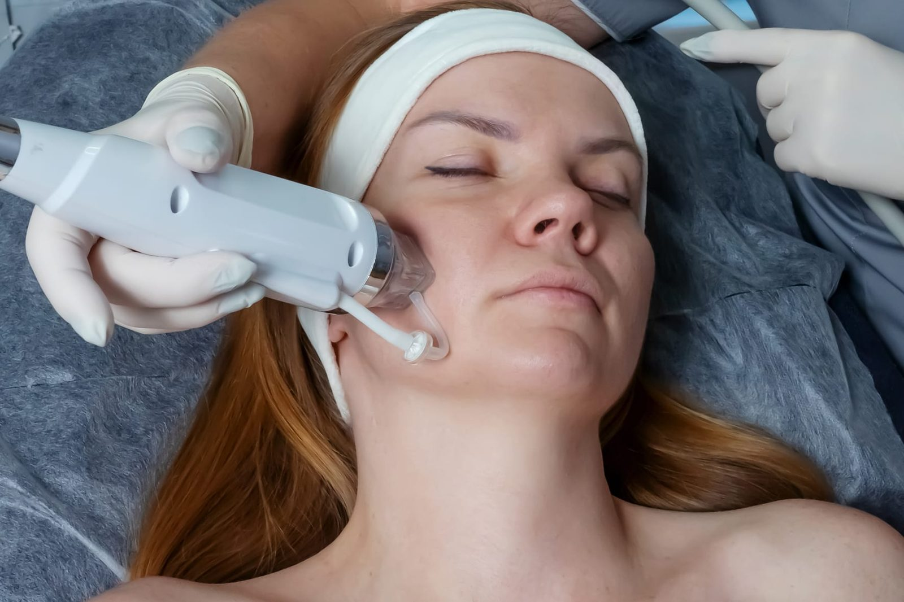

Urządzenie do oczyszczania wodorowego
Oczyszczanie wodorowe
Wielofunkcyjne urządzenie z głowicą podciśnieniową, która jednocześnie złuszcza naskórek, oczyszcza pory i dostarcza do skóry wodę wodorową. Zabieg jest bezbolesny, a skóra od razu wygląda świeżo i promiennie.
Wykorzystywane w zabiegach: